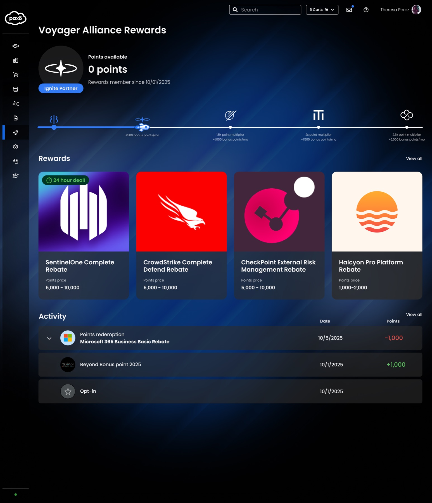
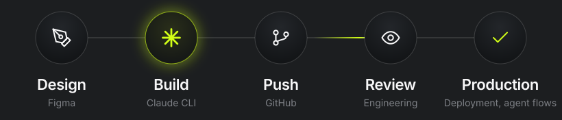
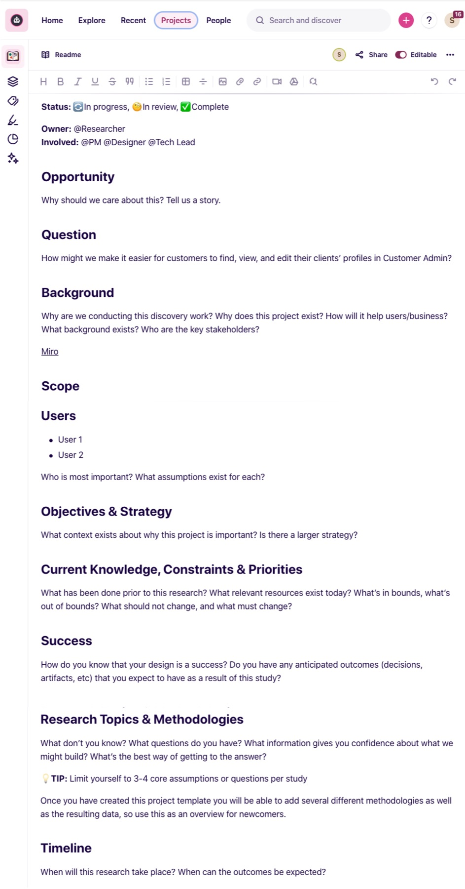
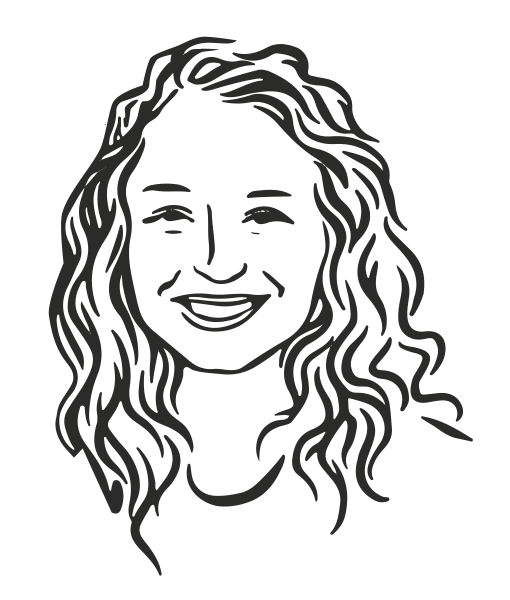
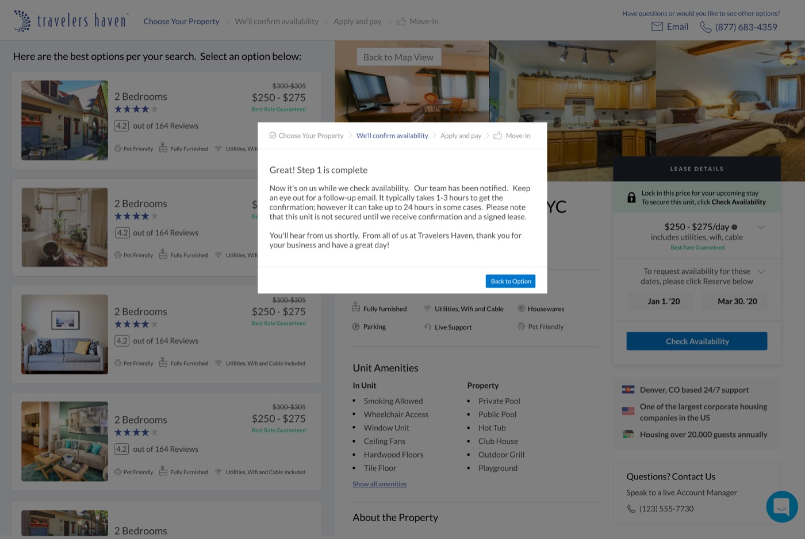

Senior Product Designer · Pax8
I turn ambiguous problems into something a team can build.
Sometimes that's making a complicated product understandable for customers. Sometimes it's a research practice, a mentorship program, or a new way to get design into production. Right now it's partner programs and AI agents at Pax8.
I'm not the person who always has the answer. I'm the person who makes the problem clear enough for a team to find one.
Pick a project from the tabs

Pax8 · 2025 · Partner rewards
The last rewards program died because Pax8 paid for all of it.
I led research and designed how partners understand, join, and move through its replacement: a tiered program vendors help fund.
- Role
- Research, product strategy, UX/UI
- Shipped
- MVP alongside Beyond 2025

Pax8 · 2026 · AI agent platform
AI made building faster. It made agreeing harder.
I designed an AI agent console and built it in working code with Claude. Some of it went through engineering review into production, and a few designers picked up the workflow.
- Status
- Launching at Beyond Copenhagen
- Access
- Walkthrough on request

Homebot · 2019–2022
Design for the least confident user.
I owned Homebot's homeowner digest and advisor dashboard from discovery to delivery, and started the mentorship program and research council.
Read more
Verizon · Travelers Haven · 2016–2019
Location apps, a cross-country rally, and a 30-step rental process.
Short versions of earlier projects: Gethr, MINI Takes the States, and Travelers Haven.
See earlier work
Side projects · Ongoing
I also draw.
Posters, stickers, team swag, and a lot of dogs.
See illustrations
About
A decade in product design, based in Denver.
-
Jan 2023 – now
Pax8
Senior Product Designer. Partner programs and AI agents for IT providers.
- Voyager Alliance rewards
- Horizon agent console
- Designing in code

-
2019 – 2022
Homebot
Senior Product Designer. Product work, plus the structures that helped the team learn and decide together.
- Mentorship program
- Research Council
- Kickoff frameworks

-
2018 – 2019
Travelers Haven
Product Designer. Corporate housing. Redesigned a booking flow that took about 30 steps.
- Booking flow
- Availability before background checks

-
2016 – 2018
Verizon
Product designer, then Product Manager. When the app's PM was reassigned, I took over product and kept designing.
- Gethr
- MINI Takes the States
-
Alongside
Outside work
Things I design and build on my own time.

Also a UX/UI designer at Avanade, overlapping my start at Verizon. Before design I worked in ad sales and creative recruiting, then did a three-month design bootcamp. Probably why I care about the business model as much as the button.
- Resume
- Side projects
- Outside work
- Writing
- Medium
- Contact
- saraha.leach@gmail.com